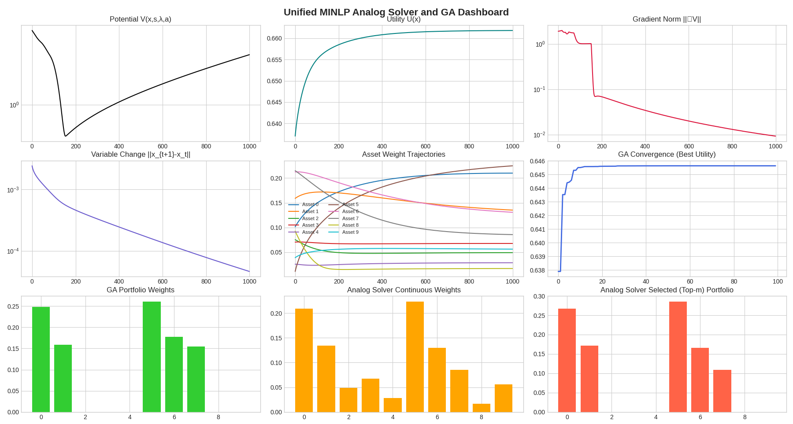

Continuous-Time Analog MINLP Solver & GA Comparison
Built a discrete-time analog solver for mixed-integer nonlinear programs and benchmarked it against genetic algorithms; achieved stable trajectory tracking and competitive optima on testbeds.
Optimization
Python
SciPy